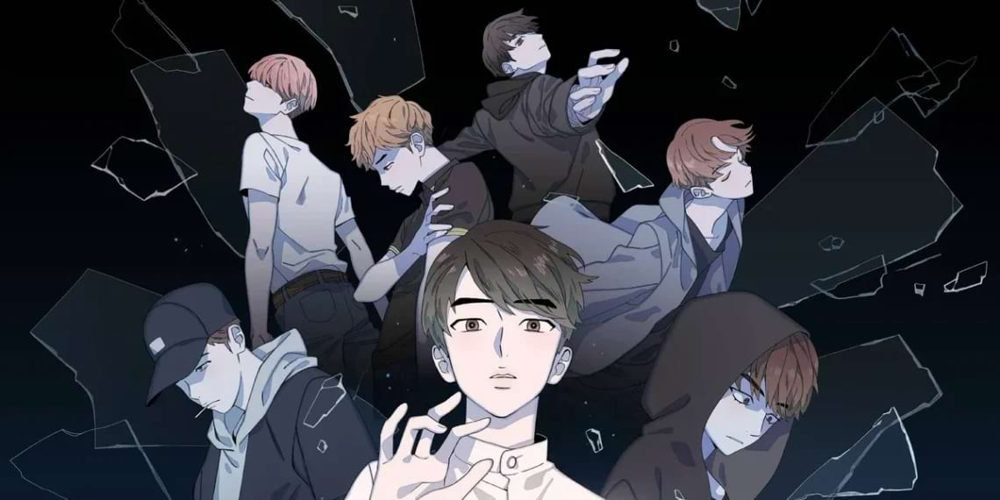

Read this article to learn how Webtoon Kpop, the two Korean media, impact each other. Moreover, how did K-pop groups bring the Hallyu wave?
The primary reason behind South Korea’s international appeal is K-pop. Many K-pop fans enjoy reading manhwa and webtoons; simultaneously, there are manhwa readers who don’t know anything about K-pop. They must have heard these lyrics: “Cause I-I-I’m in the stars tonight..” or maybe “Ha-how you like that?” Even if they don’t know these lyrics, they definitely know Gangnam Style. In this article, you will learn about the brief history of K-pop and how webtoons impact K-pop. Furthermore, you will learn about the role of the Hallyu wave in the collaboration of Webtoon Kpop.